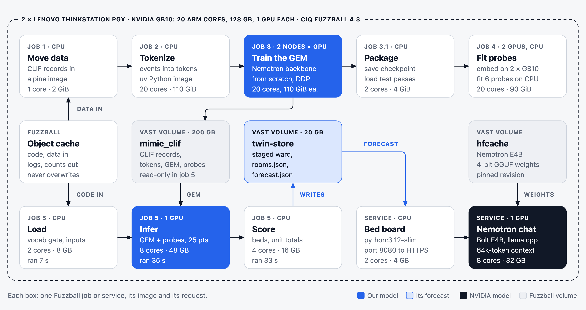

ICU Horizon
From bench to bedside
Team 7 · CLIF · CIQ × NVIDIA × Lenovo Local AI Hackathon · Chicago · Nov 14–15, 2026
J.C. Rojas, MD, MS · Kaveri Chhikara, MS · Vaishvik Chaudhari, MS
Dema Therese, MS · Zewei ('Whiskey') Liao, MS
Five predictions for every ICU patient, for the next 24 hours, and what the whole unit will need, from a model we trained and run on two computers inside the hospital.
The problem
A small or rural ICU has few ventilators and dialysis machines, no data-science team and no cloud for patient data. It learns it is short when it already is; help is a transfer hours away.
What we built
A bed board for 07:00 rounds: each bed's life support now and the chance of what starts by tomorrow, added up against the unit's machines. A chat answers in plain words.
What is new for healthcare AI
- Speaks EHR, not English: our own model, trained from scratch on two desk-side GPUs.
- One pass, many outcomes: small classifiers read its hidden layer; no retraining.
- Patient to unit: chances add up to resource strain a day ahead.
- Private, portable: runs locally on a hospital's own clinical data.
Ventilator start
a breathing machine · for respiratory therapy
AUROC 0.78
Vasopressor start
holds blood pressure up · for pharmacy
AUROC 0.77
CRRT start
continuous dialysis · for the ICU team
AUROC 0.88
Leaves the ICU
to a ward or step-down · for bed managers
AUROC 0.80 / 0.89
Death
a unit count, never on a bed
AUROC 0.93
AUROC on past ICU patients the model never saw: 0.5 is a coin toss, 1.0 perfect. Leaving the ICU combines ward and step-down.

- 1It speaks EHR, not EnglishIts 1,231 words are events from the health record (labs, vitals, drugs, machines); it learned to guess the next one. 36M parameters, trained from scratch.
- 2Read its hidden layerOne pass over each patient's first 24 h in the ICU; its last hidden layer holds 384 numbers that sum up the patient.
- 3Six small classifiersLogistic regressions fitted on past patients turn them into five chances. NVIDIA Nemotron 3 Nano explains them in English.

Fuzzball: Orchestrate schedules every job, image and VAST volume; Substrate runs the NVIDIA containers; we drove it with the Fuzzball MCP server and CLI. All four tracks: multi-node training (job 3, both GB10s) · inference (job 5, Nemotron) · scientific AI · cluster scheduling (five workflows).